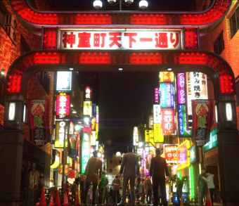

Controversy
There is a lot of controversy as every game goes through. From the game itself all the way to the actors themselves. To start, Yakuza is compared to GTA a lot, at least when it was starting to gain more traction here in the US. As most Rated M+ games, ages 17+, content is almost always taken out or changed to release this way. Though you can find practically the same amount of violence in both, what our characters themselves are allowed to do is nowhere near what you can do in GTA. You are not allowed to go around causing mayhem and hitting pedestrians, Yakuza is a more straightforward story-lined game and the only people you are fighting are those that you are allowed to fight.
Yakuza also deals with a lot of localization issues coming overseas so there is always scene censorship and minigames being taken away. I would say these are more on the smaller side as they go through actor controversy the most. One of the things RGG is known for is their use of face scanning a lot of the main characters, so majority of the characters look very similar, or as close to them as possible. You would think this wouldn’t be an issue but there are a lot of actor dramas that happen and typically when there is any drama, that actor ends up being replaced. One example would be an actor by the name of Pierre Taki, he voices a character named Hamura in Judgement, who had a drug scandal which led to that games release being delayed. There are more serious cases of this, but they are not short on the number of times it happens.
